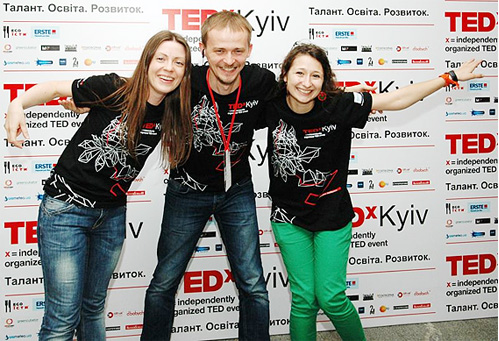

TEDxKyiv не існує без волонтерів. Команда наразі нараховує близько 15 учасників. А оскільки кожна наступна подія – це новий крок до незвичного (і для команди, і для спільноти), ми шукаємо зростання та нових відданих, далекоглядних та шалених членів команди. У підготовці кожної події задіяно майже 2000 волонтеро/годин.
Це багато? Це захоплююче!
Листи від зацікавлених майбутніх колег по команді чекаємо на info@tedxkyiv.com – разом з коротким описом себе та посиланнями на попередній досвід. Оскільки ми теж волонтери – дайте нам, будь ласка, пару днів на підтвердження про отримання. Знаємо, що спільнота TEDxKyiv багата на таланти, тому сподіваємося протягом лютого знайти потрібних колег до команди.

Успішні кандидати на будь яку з вакансій наслідують
3 головні ознаки TED:
- знанняknowledge
- натхненняinspiration
- сила змінюватиpower to transform
Нам потрібні
-
— Адміністративно-серйозний прихильник TEDx
В обовязки входитиме налаштування та підтримка системи продажу квитків (за допомогою обраних e-сервісів), підтримка запитів від учасників, технічних питань.
Ідеальний кандидат має: теплий та елегантний слог, бажаний досвід в підтримці сайта, творчий погляд на речі, цікавиться подіями в TEDx-спільноті.
Відправити резюме
-
— Контент-редактор веб-сайту та email-новин
Наш новий (скоро) сайт буде живим не лише завдяки спікерським відео, але й новинам/матеріалам, що Ви підготуєте. А саме – інтерв’ю, події/досягнення в спільноті, інше (в допомогу шукаємо блогерів та журналістів – 3-4 людини). Творіть з прив’язкою до TED/TEDx, цікавтеся, з прикладами та ресурсами допоможемо: регулярні дружні розсилки – не частіше щотижня (частка спільноти знаходиться поза репостів в соцмедіа).
Ідеальний кандидат має: теплий та елегантний слог, бажаний досвід в підтримці сайта, творчий погляд на речі, цікавиться подіями в TEDx-спільноті.
Відправити резюме
-
— Технічний асистент
Інтернет та веб-трансляція на події, електросистеми…
Ідеальний кандидат має: теплий та елегантний слог, бажаний досвід в підтримці сайта, творчий погляд на речі, цікавиться подіями в TEDx-спільноті.
Відправити резюме
-
— Відео-директор
творча та відповідальна людина зі своїми відео-можливостями або зв’язками організувати та реалізувати декілька відео-задумок.
Ідеальний кандидат має: теплий та елегантний слог, бажаний досвід в підтримці сайта, творчий погляд на речі, цікавиться подіями в TEDx-спільноті.
Відправити резюме
Не знайшли місця для себе?
Створіть його!
Напишіть нам, в чому ви сильні, чим надихаєтесь та ваші найулюбленіші відео з TED/TEDх.